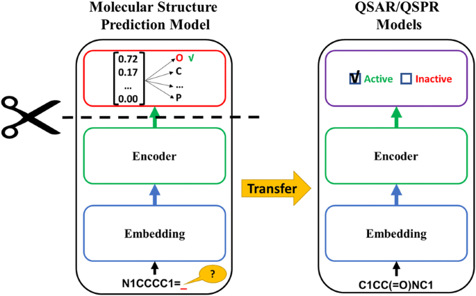
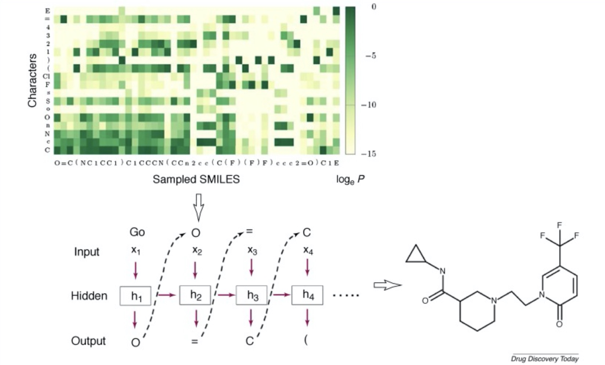
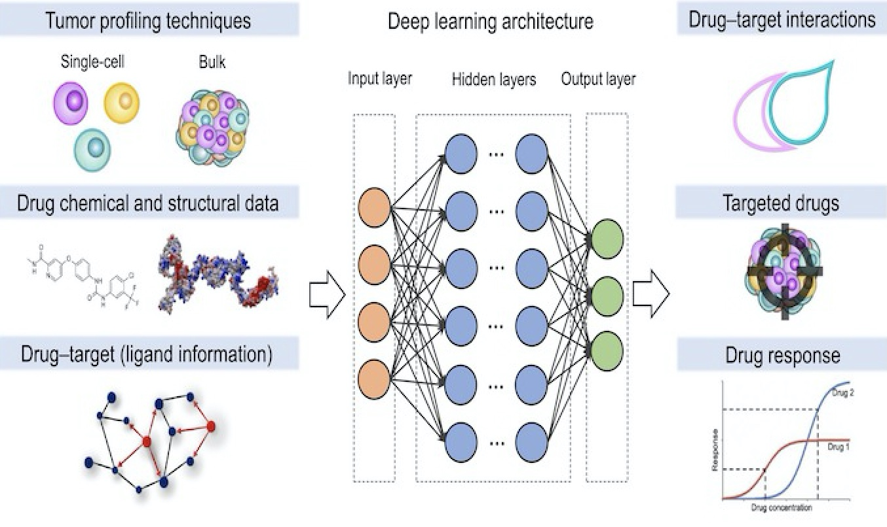
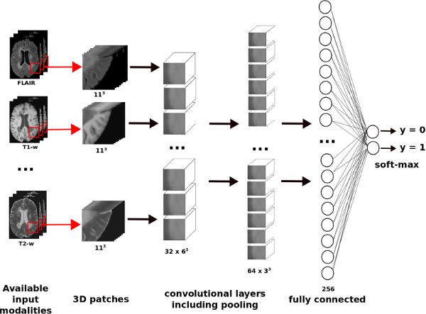
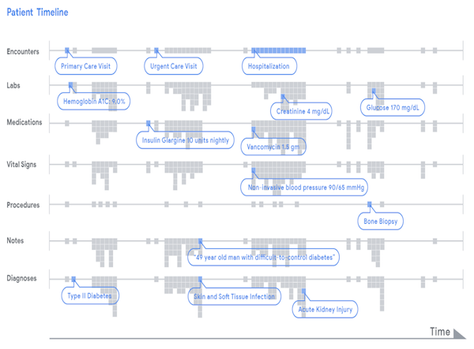
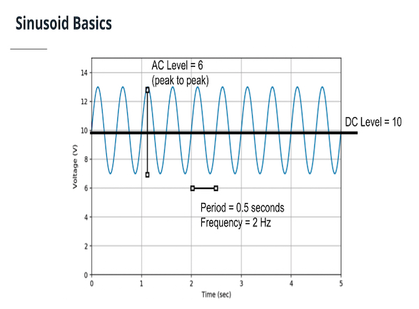

Deep Learning in Drug Discovery
Main Application of Deep Learning in Drug Discovery.

Drug properties prediction
Drug properties prediction can be framed as a supervised learning problem. The input to the algorithms is a drug (compound), and the output is drug property.

De Novo drug design
Applying generative models for designing chemical molecules, by given certain desirable properties. Usually generative models being used in this area.

DTI Prediction
Predicting whether a particular drug can bind to particular proteins or not. This is a concept which is called drug-target interaction (DTI) prediction.
Enable enhanced medical decision-making powered by machine learning to build the treatments of the future.

AI to 2D & 3D Medical Images
Build different AI models for different clinical scenarios that involve 2D & 3D images and learn how to position AI tools for regulatory approval.

Applying AI to EHR Data
Analyze an EHR dataset, transform it to the right level, build powerful features with TensorFlow, and model the uncertainty and bias with TensorFlow Probability.

AI to Wearable Device Data
Cover the sensors and signal processing foundation that are critical for success in this domain, including IMU, PPG, and ECG that are common to most wearable devices.
View posts about basic drug or medical knowledge, algorithm & data structure and programming skills.